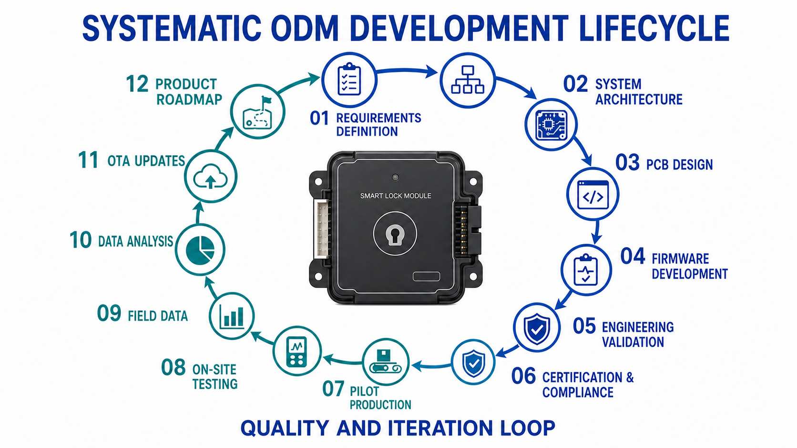
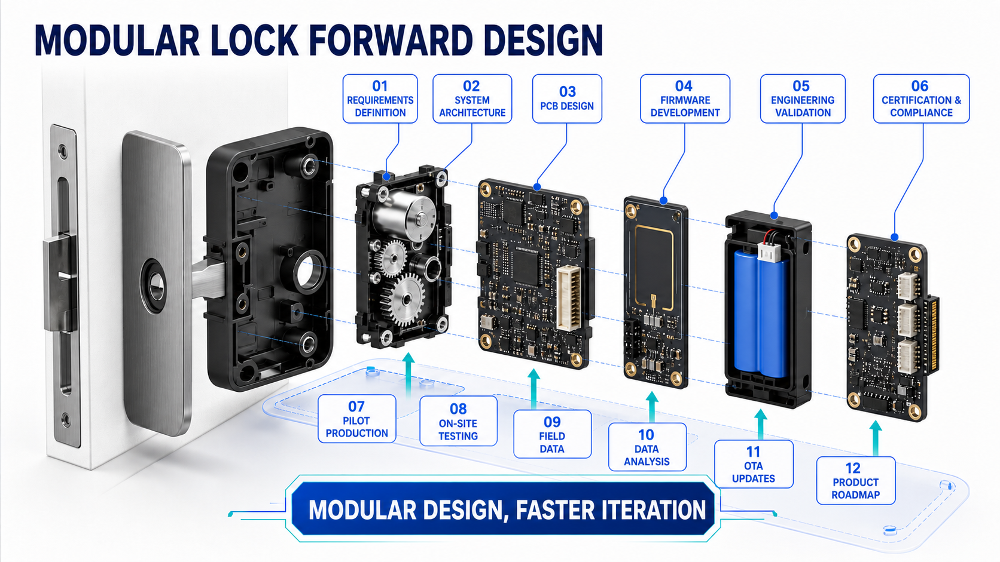
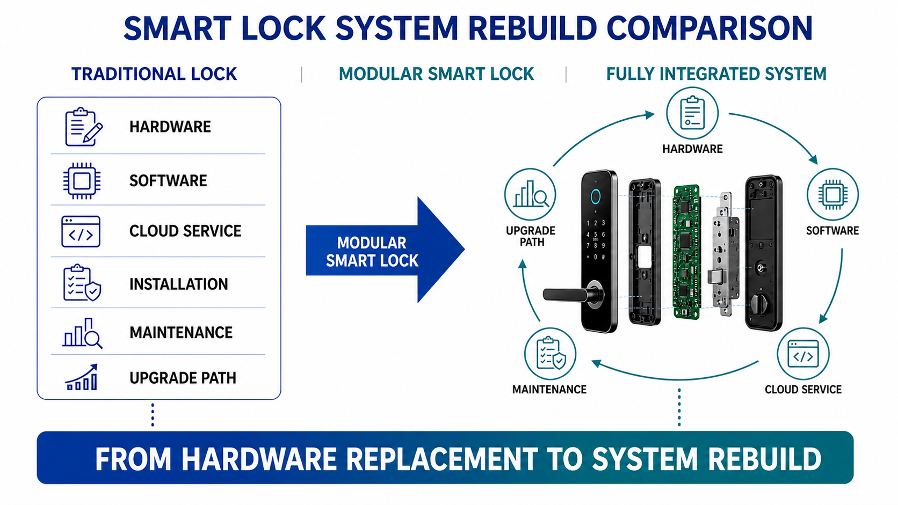
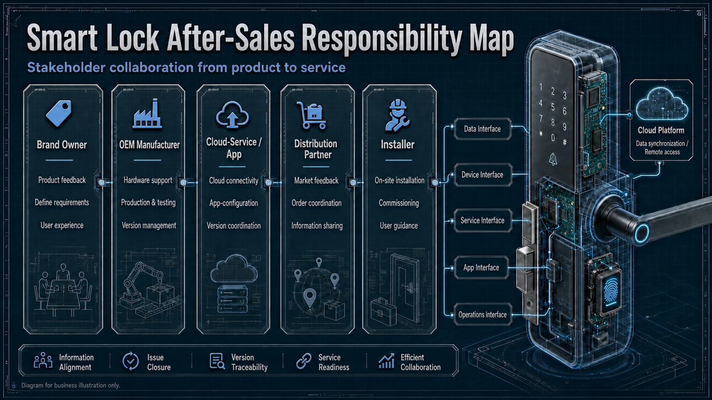

This article is intended for brands, distributors, integrators and project teams. Model roles are a discussion framework; dimensions, performance, certification and supplied scope must be confirmed against the approved WAFU specification.
A strong smart-lock product line is not a long list of similar models. It translates different door situations, security objectives, installation conditions and service boundaries into clear product roles. WF-010, WF-019 and WF-026 can make the sales conversation repeatable without forcing every project into a completely new configuration.

1. Define product roles instead of a variant list
Start with recurring project requirements: standardization, concealed appearance, authorization options, structural margin, installation access and maintainability. A model role should explain which problem it addresses, what evidence is required and where its recommendation ends.
| Product role | Typical buyer question | Key evidence |
|---|---|---|
| WF-010 | How can we cover many standard projects with a clear baseline? | Door profile, core functions, sample and supplied scope |
| WF-019 | How do we combine concealed appearance with the right authorization flow? | Installation space, user flow, emergency access and handover |
| WF-026 | How do we support projects with higher security or structural priority? | Fastening, load, service access and acceptance criteria |
2. Set platform and modular boundaries
A product line becomes manageable for distributors when shared components, optional modules and project-specific deviations are documented separately. Define which lock bodies, motors, PCBs, batteries, sensors, radio modules and firmware baselines can be shared. Every interface needs a version and approval status.

Modularity is not permission to combine every option. Confirm compatibility, power demand, mechanical installation, firmware behavior, certification scope and spare-parts strategy for each option so a project offer remains technically traceable.
3. Choose product roles by project risk
Start with the project objective. WF-010 can be the first comparison for many standard doors. When concealed appearance, flexible authorization or a particular user experience leads the brief, WF-019 may be the better direction. For reinforced doors, higher security focus or difficult maintenance assumptions, validate WF-026 against real door data first.

| Project stage | Decision | Recommended record |
|---|---|---|
| Screening | Capture door, quantity, market and primary goal | Project brief and model comparison |
| Sample | Check mechanics, authorization and emergency path | Sample record and open points |
| Production approval | Freeze configuration and version | Approval sheet and supplied scope |
| Operation | Manage roles, spare parts and RMA | Handover package and support annex |
4. Connect sales, installation and support
Distributors need a product story that installers and after-sales teams can execute. Sales material should not promise a function that has not been confirmed in installation or the target market. Installers need door data, drawings, emergency access and commissioning steps. Support needs serial number, version, symptom and clear escalation contacts.

For each model, prepare a short briefing, sample and acceptance form, spare-parts list, firmware and configuration record, and RMA route. The Smart-lock OEM after-sales checklist helps structure these points before production launch.
5. Protect the product line with version control
A product line loses clarity when samples, production goods and customer-specific changes share the same name. Link model, hardware, PCB, firmware, app, packaging, labels and relevant certification records to a version baseline. Changes after approval must have a reason, evidence and renewed confirmation.
For a change to the lock body, motor, PCB, radio module or emergency path, decide whether mechanical, electrical, software or certification tests must be repeated. The sample approval and change-control guide provides the operating framework.
6. Portfolio approval questions
- Which door and market profiles should the line cover?
- What is each model's role, and where does its recommendation end?
- Which components and software baselines are shared?
- Which options are compatible and which are project-specific?
- Which samples are needed for the main door profiles?
- Who confirms installation, emergency access and rights handover?
- Which target-market documents are required?
- How are packaging, labels and SKUs distinguished?
- Which spare parts are planned for each model role?
- How are firmware, API and cloud responsibilities recorded?
- How is a recurring field issue detected and escalated?
- When should field data update the portfolio decision?
Request a portfolio and project comparison
Share your target market, door profiles, quantities, authorization requirements and sales model. WAFU can prepare a practical discussion and sample structure for WF-010, WF-019 and WF-026.
Frequently asked questions
Should a distributor carry all three models?
Not necessarily. The decision should follow local door profiles, target customers, service capability and recurring project roles.
How do we prevent portfolio cannibalization?
Use clear roles, boundaries, evidence and consistent proposal documents instead of relying on long technical feature lists.
When should a custom variant be created?
Only when recurring requirements, sample results and change effort justify the deviation and the support organization can maintain it long term.